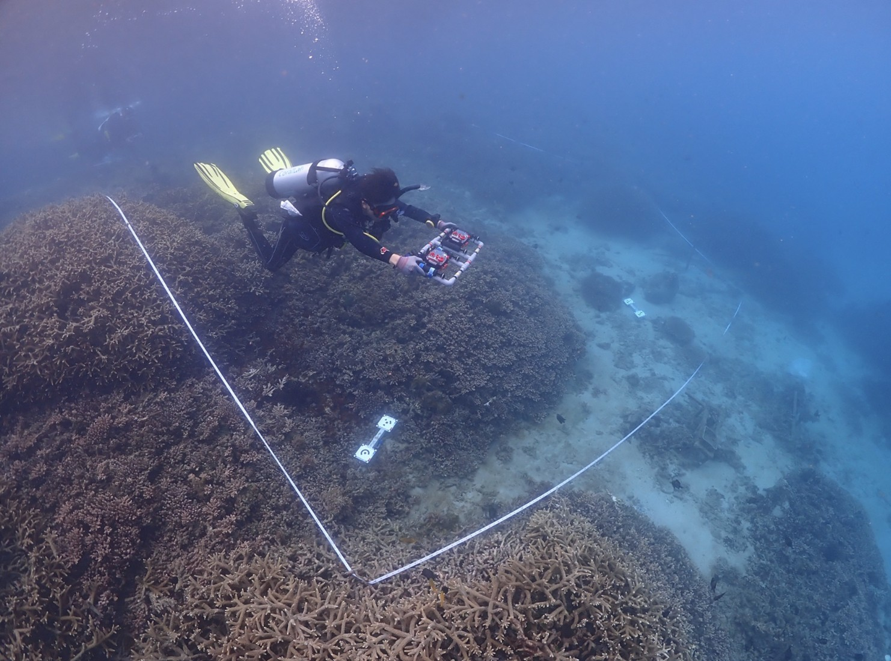

Overview計畫概述
Structural complexity is the hallmark of coral reef ecosystems — reef-building corals create intricate three-dimensional habitats that sustain biodiversity and deliver critical ecosystem services. Quantifying this complexity has historically been difficult, limited to subjective visual rankings or labour-intensive rugosity transects. Structure-from-Motion (SfM) photogrammetry now offers a non-destructive, image-based approach that generates high-resolution 3D models from densely overlapping underwater photographs, enabling precise measurement of coral cover, colony volume, surface area, and structural change over time.
In collaboration with Prof. Tung-Yung Fan's Fan Coral Lab at the National Museum of Marine Biology and Aquarium (NMMBA), I help develop and refine the Standard Operating Procedures (SOPs) for SfM-based underwater 3D reef surveys and GIS-based coral population dynamics analysis methods. This project extends across Taiwan — from the coral reefs of Kenting and the nuclear power plant outfall in the south, to Xiaoliuqiu, Green Island, Orchid Island, the northeast coast (Chaojing, Longdong), the east coast, and Penghu — building a comprehensive, standardised, multi-year 3D monitoring network for Taiwan's coral reef ecosystems.
結構複雜度是珊瑚礁生態系最顯著的特徵——造礁珊瑚藉由生長與堆積碳酸鈣骨骼，形成複雜多樣的立體結構，提供眾多海洋生物棲息、繁殖與覓食的場所，維持生物多樣性並貢獻重要的生態系服務。傳統上量化珊瑚礁結構複雜度十分困難，多仰賴主觀的目視等級評估或費時費力的粗糙度穿越線法。運動恢復結構（SfM）攝影測量技術提供了一種非破壞性、基於影像的三維建模方法，透過密集拍攝高度重疊的水下照片，可產生高解析度 3D 模型，精確量測珊瑚覆蓋率、群體體積、表面積及結構隨時間的變化。
本計畫與國立海洋生物博物館（海生館）樊同雲老師的 Fan Coral Lab 合作，我協助發展與優化基於 SfM 的水下 3D 珊瑚礁調查標準作業流程（SOP）以及基於 GIS 的珊瑚礁族群動態分析方法。調查範圍遍及全台——從南部墾丁珊瑚礁與核三廠出水口、小琉球、綠島、蘭嶼、東北角（潮境、龍洞）、東部海岸，到澎湖——建立全台珊瑚礁生態系的標準化多年期 3D 監測網絡。
Survey Sites調查點位
Our 3D survey network covers coral reef sites across Taiwan, from the subtropical reefs of the northeast coast to the tropical fringing reefs of the southern tip and offshore islands. The interactive map below shows all current and planned survey locations. Sites span seven major regions: Northern & Northeastern Coast, Eastern Coast, Southern Taiwan (Kenting), Xiaoliuqiu, Green Island, Orchid Island (Lanyu), and Penghu.
我們的 3D 調查網絡涵蓋全台珊瑚礁，從東北角亞熱帶珊瑚群聚到南端熱帶裙礁以及離島。以下互動地圖顯示所有目前及計畫中的調查點位，涵蓋七大區域：北部與東北部、東部、南部（墾丁）、小琉球、綠島、蘭嶼、以及澎湖。

Underwater SfM photogrammetric survey on a coral reef site · 水下 SfM 攝影測量珊瑚礁調查
SOP Development標準作業流程開發
We developed a comprehensive Standard Operating Procedure (SOP) for image-based underwater 3D coral reef surveys, synthesising protocols from the Scripps Institution of Oceanography (Kodera et al. 2020), NOAA (Suka et al. 2019), and University of Hawai'i (Fukunaga et al. 2019; Miller et al. 2021), integrated with our own field experience in Taiwan. The workflow is divided into three major phases: underwater survey, 3D modelling, and data analysis.
In the field, divers capture densely overlapping photographs following a boustrophedon (lawnmower) pattern over a 5 × 5 m plot, with ≥80% forward overlap and ≥60% lateral overlap. Ground Control Points (GCPs) are deployed for georeferencing, with compass orientation verified to ensure north alignment. We use Olympus TG-6 cameras (dual-camera rig for efficiency) or Nikon D7500 DSLRs, configured to avoid wide-angle distortion and flash shadows.
For 3D reconstruction, we use Agisoft Metashape Professional with standardised parameter settings. A key methodological improvement I introduced is the coordinate system conversion workflow — transforming models from local coordinates to the WGS 84 (EPSG:4326) geographic coordinate system. This involves measuring at least three marker positions with known longitude, latitude, and depth, using ArcGIS Pro for triangulation and coordinate transformation. The WGS 84 standard eliminates georeferencing errors and removes the need for auxiliary coordinate transformation files when sharing data across teams.
我們建立了完整的基於影像水下 3D 珊瑚礁調查標準作業流程，綜合參考 Scripps 海洋學研究所（Kodera et al. 2020）、NOAA（Suka et al. 2019）及夏威夷大學（Fukunaga et al. 2019; Miller et al. 2021）的方法，結合本團隊在台灣的實際調查經驗。流程分為三大階段：水下調查、三維建模、資料分析。
水下調查時，潛水員以牛耕式路徑在 5×5 公尺樣區內密集拍攝，照片前後重疊度 ≥80%、左右 ≥60%。現場佈設地面控制點（GCP）進行地理參照，並確認指北針方位。使用 Olympus TG-6（雙機並聯框架）或 Nikon D7500 單眼相機，避免廣角畸變與閃光燈陰影。
三維建模使用 Agisoft Metashape Professional，搭配標準化參數設定。我引入的關鍵改進是坐標系轉換流程——將模型從在地坐標系轉換為 WGS 84（EPSG:4326）地理坐標系。此流程需取得至少三個標記點的經緯度與深度資訊，利用 ArcGIS Pro 進行三角測量與坐標轉換。統一使用 WGS 84 標準可消除地理參照投影錯誤，也無需在團隊間分享資料時附帶坐標轉換檔案。
GIS-based Reef Analysis基於 GIS 的珊瑚礁分析
Beyond 3D reconstruction, we developed a GIS-integrated analytical pipeline for coral reef population dynamics. Orthomosaics and Digital Elevation Models (DEMs) exported from Agisoft Metashape are imported into ArcGIS Pro for spatial analysis, including coral cover mapping, colony-level demographic tracking, and structural complexity quantification across repeat surveys.
By georeferencing all survey plots in WGS 84, we enable direct spatial comparison between time points — detecting colony growth, partial mortality, recruitment, and subtle structural changes caused by human activities such as anchor damage and recreational diving (Chen & Dai 2021). Demographic analyses integrating colony size and morphology draw on findings from Chen et al. (2025, The American Naturalist), which demonstrated that coral shape contributes independently to survival and growth rates beyond what size alone can explain, enabling more accurate population trajectory forecasts under future disturbance scenarios.
除了三維重建，我們還開發了整合 GIS 的珊瑚礁族群動態分析流程。從 Agisoft Metashape 輸出的正射影像（Orthomosaic）與數值高程模型（DEM）匯入 ArcGIS Pro 進行空間分析，包括珊瑚覆蓋率製圖、群體層級族群動態追蹤、以及跨時序重複調查的結構複雜度量化。
透過將所有調查樣區統一以 WGS 84 進行地理參照，我們可直接比較不同時間點的空間資料——偵測群體生長、部分死亡、新加入，以及人為活動（如拋錨損傷與休憩潛水）造成的微細結構變化（Chen & Dai 2021）。結合群體大小與形態的族群動態分析，參照 Chen et al.（2025，The American Naturalist）的發現：珊瑚形態對存活率與生長率的貢獻獨立於體型大小，使未來干擾情境下的族群動態預測更為精確。
Project Scope計畫範疇
This work supports two major funded projects led by Prof. Fan's team:
- Taiwan Coastal Coral Monitoring Survey & Xiaoliuqiu Coral Restoration — Commissioned by the Ocean Conservation Administration (OCA), this project establishes a national coral monitoring network across 35+ priority sites in seven regions, combining traditional belt transect / CoralNet surveys with our 3D photogrammetric approach for select key sites. 臺灣周邊海域珊瑚監測調查暨小琉球珊瑚復育計畫——受海洋保育署委託，於全台七大區域 35 個以上優先點位建立國家珊瑚監測網絡，結合傳統帶狀樣區／珊瑚網調查與我們在特定關鍵點位的 3D 攝影測量方法。
- Coral Ecosystem Restoration & 3D Monitoring in Southern & Northern Taiwan — Funded by the Delta Electronics Foundation, this project establishes restoration plots (restored, reference, and control sites) at the NPP3 outfall reef in Kenting and at Chaojing in northern Taiwan, each monitored via 3D photogrammetry at 6-month intervals, with coral transplantation experiments and international collaboration through the World Coral Conservatory (Monaco). 台灣南部與北部珊瑚生態系的復育與 3D 監測——由台達電子文教基金會資助，於墾丁核三廠出水口珊瑚礁及北部潮境建立復育區（復育區、參考區、對照區），每半年以 3D 攝影測量進行監測，並進行珊瑚移植實驗及與世界珊瑚方舟計畫（摩納哥）的國際合作。